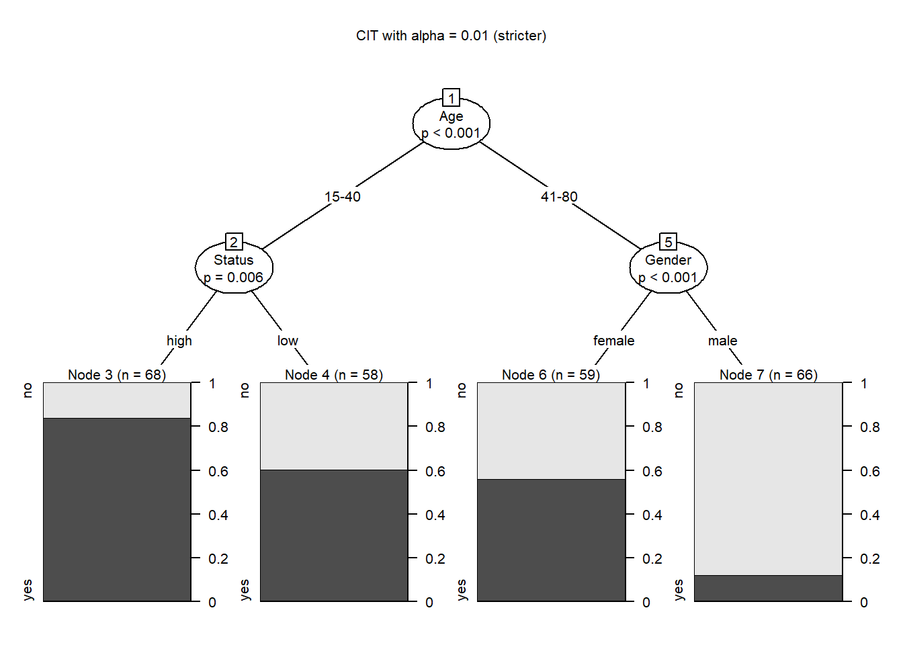
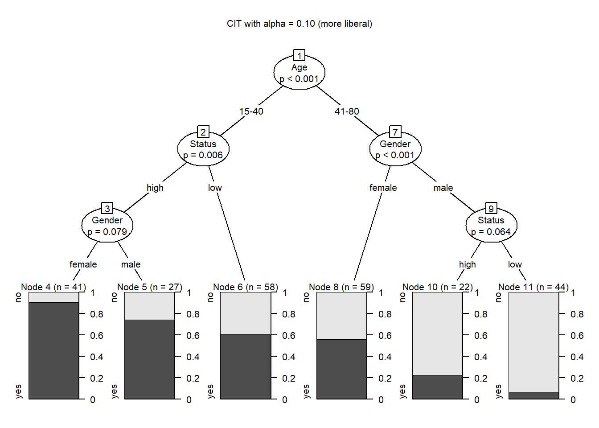
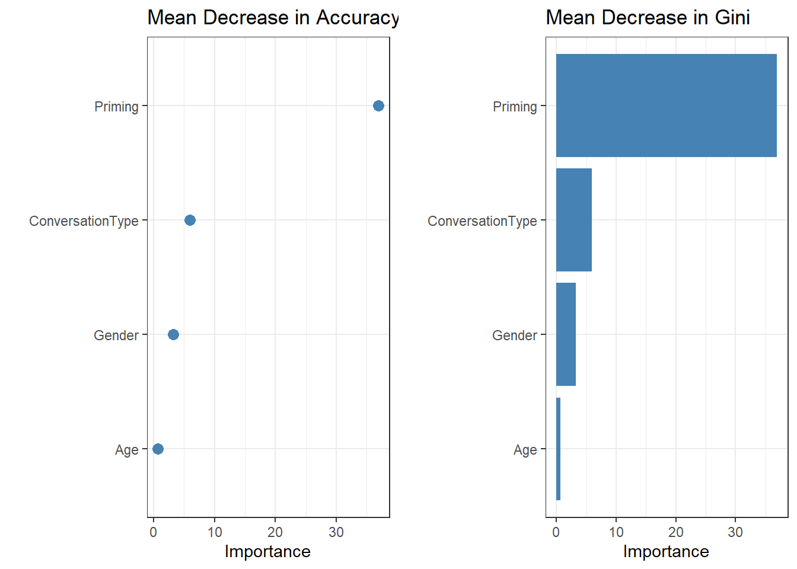
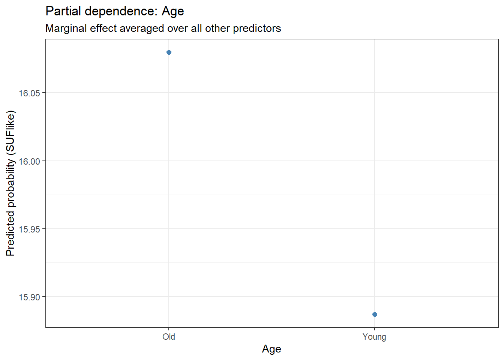
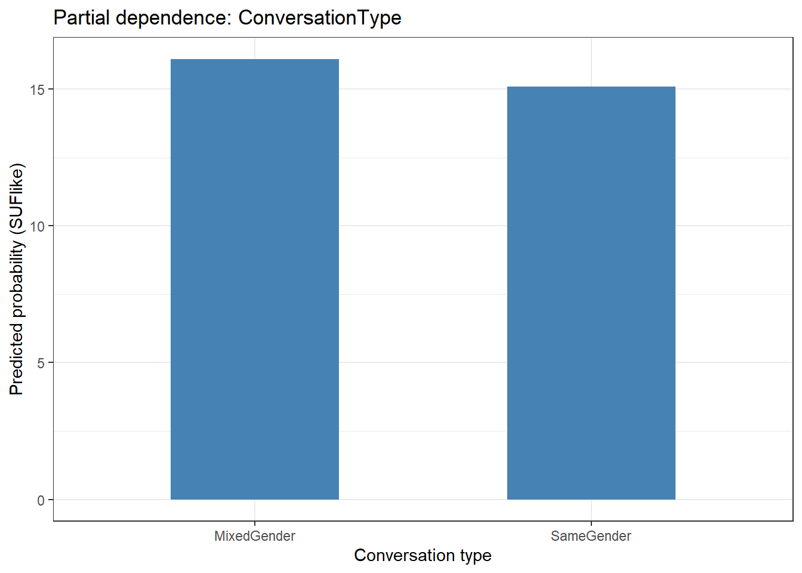

This tutorial introduces tree-based machine learning methods in R, covering decision trees, random forests, variable importance, and ensemble methods for both classification and regression tasks, with applications to linguistic data. It is aimed at researchers in corpus linguistics, computational linguistics, and the digital humanities who want interpretable machine learning tools for their research.
Author
Martin Schweinberger
Published
2026
Great Court, The University of Queensland
Introduction
This tutorial introduces tree-based models and their implementation in R. Tree-based models are a family of flexible, non-parametric machine-learning methods that partition data into increasingly homogeneous subgroups by applying a sequence of binary splitting rules. They are widely used in linguistics and the language sciences for classification and prediction tasks — for example, predicting whether a speaker will use a pragmatic marker, which amplifier they will choose, or whether a learner will produce a morphological error.
The tutorial is aimed at intermediate and advanced users of R. It is not designed to provide an exhaustive theoretical treatment but to show how to implement, evaluate, and interpret the three most important tree-based methods used in linguistic research: Conditional Inference Trees (CITs), Random Forests (RFs), and Boruta variable selection. For deeper theoretical treatment, the reader is referred to Breiman (2001b), Strobl, Malley, and Tutz (2009), Prasad, Iverson, and Liaw (2006), and especially Gries (2021), which provides a detailed and linguistically oriented discussion of tree-based methods.
Prerequisite Tutorials
This tutorial assumes familiarity with the following:
Regression Analysis in R — fixed-effects logistic regression; understanding accuracy, deviance, and model fit
If you are new to regression modelling, work through the regression tutorial first — many tree diagnostics (confusion matrices, accuracy, C-statistic) are introduced there.
Learning Objectives
By the end of this tutorial you will be able to:
Explain what tree-based models are, when they are appropriate, and how they differ from regression models
Understand the Gini impurity criterion and describe how a decision tree chooses splits
Explain the difference between a CART and a Conditional Inference Tree
Fit, plot, and interpret a CIT using partykit::ctree()
Produce publication-quality CIT visualisations with ggparty
Explain how Random Forests extend CITs through bootstrapping and random variable selection
Fit, evaluate, and interpret a Random Forest using both party::cforest() and randomForest::randomForest()
Extract and visualise variable importance from a Random Forest
Interpret partial dependence plots and two-way interaction plots
Explain what Boruta does and how it differs from a standard Random Forest
Run a Boruta analysis, interpret confirmed/tentative/rejected variables, and visualise results
Evaluate model performance using confusion matrices, accuracy, C-statistic, and Somers’ D
Apply cross-validation and train/test splitting to assess model generalisability
Citation
Martin Schweinberger. 2026. Tree-Based Models in R. The Language Technology and Data Analysis Laboratory (LADAL), The University of Queensland, Australia. url: https://ladal.edu.au/tutorials/tree_models/tree_models.html (Version 3.1.1). doi: 10.5281/zenodo.19242479.
Tree-Based Models: Concepts and Context
Section Overview
What you will learn: What tree-based models are, how they differ from regression models, when they are more (and less) appropriate for linguistic research, and how the three methods covered in this tutorial relate to one another
What Are Tree-Based Models?
A tree-based model answers the question: How do we best classify or predict an outcome given a set of predictors? It does so by recursively partitioning the data — splitting it into two subgroups at each step according to the predictor and threshold that best separates the outcome categories. The result is a tree-shaped diagram where:
The root node is the first (most important) split
Internal nodes are subsequent splits
Leaf nodes (terminal nodes) are the final groups, each associated with a predicted outcome
All tree-based methods share this recursive partitioning logic. They differ in how they decide where to split (Gini impurity vs. significance tests), how many trees they build (one vs. an ensemble of hundreds), and what question they answer (classification, variable importance, or variable selection).
Tree-Based Models vs. Regression Models
Tree-based models and regression models answer different questions and have complementary strengths:
Tree-based models vs. regression models
Feature
Regression models
Tree-based models
Primary goal
Inference — estimate effect sizes, directions, and significance
Classification / prediction — assign cases to categories
Effect direction
✓ Reports positive/negative relationships
✗ Does not report direction
Interactions
Requires explicit specification
Detects automatically
Non-linearity
Requires transformation or polynomial terms
Handles naturally
Distributional assumptions
Many (normality, linearity, etc.)
Very few (non-parametric)
Sample size
Performs well with large samples
Can work with moderate samples
Categorical predictors
Limited to ~10–20 levels
Limited to ~53 levels (factor constraint)
Multicollinearity
Seriously affected
Less affected
Overfitting
Less prone (with regularisation)
Prone (CITs); resistant (RFs, Boruta)
Interpretability
High (coefficients with SEs)
Moderate (trees) to low (forests)
Tree-Based Models Are Not a Replacement for Regression
Tree-based models are best understood as complementary to regression, not as substitutes. They excel at detecting complex, high-order interactions and non-linear patterns without assumptions, and are ideal when you want to know which variables matter rather than how much they matter or in which direction. For drawing inferences about the direction, magnitude, and significance of specific predictors — as is required for most linguistic hypotheses — regression models remain the appropriate tool (Gries 2021).
The Three Methods and When to Use Them
This tutorial covers three related tree-based methods. The table below summarises their key properties and appropriate use cases:
The three tree-based methods covered in this tutorial
Method
Builds
Provides
Overfitting
Best for
Conditional Inference Tree
One tree
Visual classification tree with p-values
Prone
Exploring patterns; presentations; teaching
Random Forest
100–1000 trees
Variable importance ranking
Resistant
Predicting outcomes; variable importance
Boruta
1000s of forests
Variable selection (confirmed/tentative/rejected)
Resistant
Variable selection before regression
Advantages of Tree-Based Methods
Tree-based models offer several advantages for linguistic research:
Flexibility: They handle numeric, ordinal, and nominal predictors simultaneously without transformation
Moderate sample sizes: They perform well with the sample sizes typical in linguistics (50–500 observations), whereas many machine-learning methods require thousands
High-order interactions: They detect and display complex interactions among many predictors automatically, which regression models struggle with
Non-linear and non-monotonic relationships: They do not assume linearity between predictors and the outcome
Easy implementation: They require no model selection, variable transformation, or distributional diagnostics
Limitations and Warnings
Gries (2021) provides a thorough and critical assessment of tree-based methods. Key limitations include:
Variable importance without direction: Forest-based methods (RF, Boruta) report that a variable matters but not how — not whether higher values of the predictor increase or decrease the outcome probability
Importance conflates main effects and interactions: A variable may be important as a main effect, as part of an interaction, or both — the importance score does not distinguish these
Single-interaction failure: Simple tree structures can fail to detect the correct predictor when variance is determined entirely by a single interaction (Gries 2021, chap. 7.3), because the root-node predictor is selected for its main effect, not its interaction potential
Strong main effects mask interactions: Tree-based models are poor at detecting interactions when predictors have strong main effects, which is common in linguistic data (Wright, Ziegler, and König 2016)
Factor level limits: Tree-based methods cannot handle factors with more than 53 levels — problematic for speaker or item as predictors
Bootstrapping illusion: RF and Boruta appear to handle small datasets well because they re-sample the data repeatedly, but this does not add new information — it inflates an existing small dataset rather than constituting genuine robustness
Setup
Installing Packages
Code
# Run once — comment out after installationinstall.packages("Boruta")install.packages("caret")install.packages("flextable")install.packages("ggparty")install.packages("Gmisc")install.packages("grid")install.packages("here")install.packages("Hmisc")install.packages("party")install.packages("partykit")install.packages("pdp")install.packages("randomForest")install.packages("tidyverse")install.packages("tidyr")install.packages("tree")install.packages("vip")
What you will learn: How a basic CART decision tree works step by step; how the Gini impurity criterion selects splits for binary, numeric, ordinal, and multi-level categorical variables; how to prune a tree; and how to evaluate decision tree accuracy using a confusion matrix — building the conceptual foundation for Conditional Inference Trees and Random Forests
How Decision Trees Work
A decision tree classifies each observation by routing it through a sequence of binary yes/no questions. At each internal node, the algorithm asks: which predictor, split at which value, best separates the outcome categories? The quality of a split is measured by its impurity — lower impurity means the resulting subgroups are more homogeneous with respect to the outcome, which is what we want.
The tree structure has three types of elements:
Root node — the first (most important) split; at the very top of the diagram
Internal nodes — subsequent splits that further partition the data
Leaf nodes (terminal nodes) — the final groups, each carrying a predicted class label
Code
# Load and prepare the discourse like datacitdata <-read.delim(here::here("tutorials/tree_models/data/treedata.txt"),header =TRUE, sep ="\t") |> dplyr::mutate_if(is.character, factor)# Inspect structurestr(citdata)
Age Gender Status LikeUser
1 15-40 female high no
2 15-40 female high no
3 15-40 male high no
4 41-80 female low yes
5 41-80 male high no
6 41-80 male low no
Age
Gender
Status
LikeUser
15-40
female
high
no
15-40
female
high
no
15-40
male
high
no
41-80
female
low
yes
41-80
male
high
no
41-80
male
low
no
41-80
female
low
yes
15-40
male
high
no
41-80
male
low
no
41-80
male
low
no
The data contains 251 observations of discourse like usage, with predictors Age (15–40 vs. 41–80), Gender (Men/Women), and Status (high/low social status).
Code
set.seed(111)dtree <- tree::tree(LikeUser ~ Age + Gender + Status,data = citdata, split ="gini")plot(dtree, gp =gpar(fontsize =8))text(dtree, pretty =0, all =FALSE)
Reading the tree: at the root node, speakers aged 15–40 go left; all others go right. Each branch is true to the left and false to the right. The yes/no labels at the leaves indicate the predicted class.
The Gini Impurity Criterion
The algorithm uses the Gini index to measure how mixed (impure) each potential child node would be after a split. Named after Italian statistician Corrado Gini, it was originally a measure of income inequality — here it measures inequality of class distributions:
\[G_x = 1 - p_1^2 - p_0^2\]
where \(p_1\) is the proportion of the positive class (e.g. LikeUser = yes) and \(p_0\) the proportion of the negative class in node \(x\).
\(G = 0\): perfect purity — all observations in the node belong to one class
\(G = 0.5\): maximum impurity for a binary outcome — equal class distribution
The algorithm selects the split that minimises the weighted average Gini across the two child nodes
Worked Example: Selecting the Root Node
We tabulate the outcome by each predictor and calculate Gini for each:
Code
# Cross-tabulations for each predictortable(citdata$LikeUser, citdata$Gender)
Status (Gini ≈ 0.367) beats Gender (Gini ≈ 0.389), so Status is the second split for the left branch. The algorithm continues recursively — calculating Gini for all remaining predictors at each node — until a stopping criterion is met.
Stopping Criteria for Decision Trees
The recursion stops when any of the following conditions is met:
Minimum node size: the node has fewer than minsize observations (default: 10 in tree::tree)
Minimum deviance reduction: further splits would reduce impurity by less than a threshold
Maximum depth: the tree has reached the maximum number of levels
Pure node: all observations in the node belong to the same class (Gini = 0)
Trees grown without constraints tend to overfit. Pruning (removing the least informative splits post-hoc) and the significance-based stopping in CITs both address this.
Splitting Numeric Variables
For a numeric predictor, the algorithm evaluates every possible threshold between consecutive sorted values, choosing the one with the lowest Gini.
The threshold at 52.5 years has the lowest Gini and is selected as the split point. For ordinal variables, the same logic applies but thresholds are placed at actual level boundaries rather than midpoints. For multi-level nominal variables, all possible groupings of levels into two sets must be evaluated.
Pruning a Decision Tree
An unpruned tree fits the training data perfectly but generalises poorly. Cost-complexity pruning (the default in tree::tree) uses cross-validation to find the tree size with the best trade-off between fit and complexity:
Code
set.seed(111)dtree_full <- tree::tree(LikeUser ~ Age + Gender + Status,data = citdata, split ="gini")# Cross-validate to find optimal tree sizedtree_cv <- tree::cv.tree(dtree_full, FUN = prune.misclass)dtree_cv
# Plot deviance (misclassification) vs. tree sizedata.frame(size = dtree_cv$size, dev = dtree_cv$dev) |>ggplot(aes(x = size, y = dev)) +geom_line(color ="steelblue") +geom_point(color ="steelblue", size =2) +geom_vline(xintercept = dtree_cv$size[which.min(dtree_cv$dev)],linetype ="dashed", color ="firebrick") +theme_bw() +labs(title ="Cross-validated tree size selection",subtitle ="Dashed line = optimal size",x ="Number of terminal nodes", y ="Misclassification (CV)")
Code
# Prune to optimal sizebest_size <- dtree_cv$size[which.min(dtree_cv$dev)]dtree_pruned <- tree::prune.misclass(dtree_full, best = best_size)plot(dtree_pruned, gp =gpar(fontsize =8))text(dtree_pruned, pretty =0, all =FALSE)
Evaluating Decision Tree Accuracy
Code
# Predict on training data (optimistic — same data used for fitting)dtree_pred <-as.factor(ifelse(predict(dtree_pruned)[, 2] > .5, "yes", "no"))caret::confusionMatrix(dtree_pred, citdata$LikeUser)
Confusion Matrix and Statistics
Reference
Prediction no yes
no 58 8
yes 60 125
Accuracy : 0.729
95% CI : (0.67, 0.783)
No Information Rate : 0.53
P-Value [Acc > NIR] : 0.0000000000787
Kappa : 0.442
Mcnemar's Test P-Value : 0.0000000006224
Sensitivity : 0.492
Specificity : 0.940
Pos Pred Value : 0.879
Neg Pred Value : 0.676
Prevalence : 0.470
Detection Rate : 0.231
Detection Prevalence : 0.263
Balanced Accuracy : 0.716
'Positive' Class : no
Reading a Confusion Matrix
A confusion matrix compares predicted classifications against observed outcomes:
Positive Predictive Value (PPV) = TP / (TP + FP) — proportion of positive predictions that are correct (precision)
Kappa — accuracy corrected for chance agreement (0 = no better than chance; 1 = perfect)
Always compare Accuracy against the NIR. A model is only useful if its accuracy is substantially and significantly better than simply predicting the majority class every time.
✎ Check Your Understanding — Question 1
A decision tree is grown on a dataset where 60% of outcomes are “yes”. The tree reports 65% accuracy on the training data. A colleague argues the model is useful because “it correctly classifies most cases.” Is this assessment correct?
Yes — 65% is a reasonable accuracy for linguistic data
No — the No Information Rate is 60% (always predict “yes”), so the tree only improves on the naive baseline by 5 percentage points. Given that the accuracy is measured on the same data used for training (optimistic), the true generalisation performance may be even lower.
Yes — the NIR is irrelevant; only absolute accuracy matters
No — any decision tree with accuracy below 80% is unusable
Answer
b) No — the No Information Rate is 60%, so the improvement over baseline is only 5 percentage points
When 60% of outcomes are “yes”, a naive classifier that always predicts “yes” achieves 60% accuracy. The tree’s 65% on training data represents only a 5-point improvement, and this is the optimistic in-sample estimate. For a rigorous evaluation, the tree should be evaluated on held-out data (train/test split or cross-validation). A 5-point improvement may not be statistically significant (depending on sample size) and is likely not practically meaningful for most research questions.
Conditional Inference Trees
Section Overview
What you will learn: How CITs use significance tests rather than Gini to select splits; how to fit a CIT in R; how to read and interpret every element of the output; how to extract information programmatically; how to produce publication-quality visualisations with ggparty; and how to evaluate and report CIT results
CITs vs. CARTs
Conditional Inference Trees (Hothorn, Hornik, and Zeileis 2006) address a key weakness of CARTs: variable selection bias. In a CART, predictors with more possible split points (numeric variables or factors with many levels) are artificially favoured because more candidate splits give a higher chance of finding a low Gini value by chance — even if the predictor has no real relationship with the outcome.
CITs eliminate this bias through a two-stage procedure at each node:
Is any predictor significantly associated with the outcome? A permutation test (or asymptotic approximation) is computed for each predictor. If no predictor reaches significance at the chosen threshold (default: α = .05), the node becomes a leaf — no further splitting occurs.
Which predictor splits on? Among significant predictors, the one with the strongest association (smallest p-value after multiplicity correction) is selected. The split point is then determined by optimising the test statistic.
This makes CITs more principled than CARTs: only predictors with genuine statistical evidence of association appear in the tree, and the selection is not biased by the number of possible splits.
CART vs. CIT: When to Use Which
Use a CIT (partykit::ctree) for most linguistic research. It provides unbiased variable selection and only includes predictors supported by statistical evidence.
Use a CART (tree::tree, rpart::rpart) when you need to teach the Gini criterion explicitly, when you want to manually explore pruning, or when your downstream pipeline requires it.
set.seed(111)citd_ctree <- partykit::ctree(LikeUser ~ Age + Gender + Status,data = citdata)# Default plotplot(citd_ctree, gp =gpar(fontsize =8))
Interpreting the CIT Output
The CIT plot encodes several layers of information:
Internal node boxes display: - The splitting variable name (e.g. Age) - The p-value of the permutation test used to justify the split. This p-value tells you how confidently the algorithm distinguishes outcome categories at that node — lower is stronger evidence. - The node ID number and sample size (N=…)
Edge labels show the values of the splitting variable that route observations down each branch (e.g. “15–40” vs. “41–80” for Age)
Leaf node bar charts (terminal nodes) show: - The distribution of outcome categories at that node - The height of each bar is the proportion of cases in that class - The number inside or above each bar segment is the count - The taller bar determines the predicted class for observations reaching that node
How to Read a CIT: Step by Step
Start at the root node (top). Note the splitting variable and its p-value.
Follow the branch corresponding to your observation’s value on the splitting variable.
At each subsequent internal node, repeat: follow the branch matching your observation.
When you reach a leaf node, the dominant bar gives the predicted class; the bar heights give the predicted probabilities.
The p-values along the path tell you how reliably each split distinguishes the outcome — p < .001 is very reliable; p close to .05 is marginally reliable.
Extracting CIT Information Programmatically
Rather than reading all information from the plot, we can extract it directly for reporting:
# Sample size at each terminal nodenode_sizes <-nodeapply( citd_ctree,ids = terminal_nodes,FUN =function(n) length(n$data[[1]]))cat("Leaf node sizes:", unlist(node_sizes), "\n")
Leaf node sizes: 0 0 0 0
Code
# p-values at all nodes (NA for terminal nodes)pvals_raw <-unlist(nodeapply( citd_ctree,ids =nodeids(citd_ctree),FUN =function(n) info_node(n)$p.value))pvals_sig <- pvals_raw[!is.na(pvals_raw) & pvals_raw < .05]pvals_sig
# Splitting variables at internal nodessplit_vars <-sapply(internal_nodes, function(id) { nd <-node_party(citd_ctree[[id]]) vid <- partykit::split_node(nd)$varidnames(citdata)[vid]})cat("Splitting variables:", split_vars, "\n")
Splitting variables: Gender LikeUser Status
Code
# Predicted class and probabilities for each observationcit_probs <-predict(citd_ctree, type ="prob")cit_class <-predict(citd_ctree, type ="response")head(data.frame(Observed = citdata$LikeUser,Predicted = cit_class,Prob_no =round(cit_probs[, 1], 3),Prob_yes =round(cit_probs[, 2], 3)), 10)
Observed Predicted Prob_no Prob_yes
1 no yes 0.162 0.838
2 no yes 0.162 0.838
3 no yes 0.162 0.838
4 yes yes 0.441 0.559
5 no no 0.879 0.121
6 no no 0.879 0.121
7 yes yes 0.441 0.559
8 no yes 0.162 0.838
9 no no 0.879 0.121
10 no no 0.879 0.121
Adjusting the Significance Threshold
The default significance threshold (α = .05) can be adjusted via ctree_control(). A stricter threshold produces a simpler (more pruned) tree; a more liberal threshold produces a more complex tree:
Code
# Strict tree: only very strong associations splitcit_strict <- partykit::ctree( LikeUser ~ Age + Gender + Status,data = citdata,control = partykit::ctree_control(alpha =0.01))plot(cit_strict,gp =gpar(fontsize =8),main ="CIT with alpha = 0.01 (stricter)")

Code
# Liberal treecit_liberal <- partykit::ctree( LikeUser ~ Age + Gender + Status,data = citdata,control = partykit::ctree_control(alpha =0.10))plot(cit_liberal,gp =gpar(fontsize =8),main ="CIT with alpha = 0.10 (more liberal)")

Choosing the Significance Threshold
Set the significance threshold before fitting the tree, not after inspecting the result. Post-hoc adjustment of α to produce a “cleaner” or “more interesting” tree is a form of researcher degrees of freedom that inflates Type I error. The default α = .05 is appropriate for most applications; α = .01 is reasonable when you want to be conservative about which predictors enter the tree.
Publication-Quality CIT with ggparty
Code
# Re-fit for ggparty (ensure clean object)set.seed(111)citd_ctree <- partykit::ctree(LikeUser ~ Age + Gender + Status, data = citdata)# Extract p-values for node annotationpvals <-unlist(nodeapply( citd_ctree,ids =nodeids(citd_ctree),FUN =function(n) info_node(n)$p.value))pvals <- pvals[pvals < .05]
cit_pred <-predict(citd_ctree, type ="response")caret::confusionMatrix(cit_pred, citdata$LikeUser)
Confusion Matrix and Statistics
Reference
Prediction no yes
no 58 8
yes 60 125
Accuracy : 0.729
95% CI : (0.67, 0.783)
No Information Rate : 0.53
P-Value [Acc > NIR] : 0.0000000000787
Kappa : 0.442
Mcnemar's Test P-Value : 0.0000000006224
Sensitivity : 0.492
Specificity : 0.940
Pos Pred Value : 0.879
Neg Pred Value : 0.676
Prevalence : 0.470
Detection Rate : 0.231
Detection Prevalence : 0.263
Balanced Accuracy : 0.716
'Positive' Class : no
Code
# C-statistic from predicted probabilitiescit_prob_yes <-predict(citd_ctree, type ="prob")[, 2]Hmisc::somers2(cit_prob_yes, as.numeric(citdata$LikeUser) -1)
C Dxy n Missing
0.7857 0.5713 251.0000 0.0000
Limitations of Single Trees
CITs are interpretable and principled, but they share a fundamental limitation: overfitting. A single tree that fits the training data well tends to perform worse on new data because it has learned noise in addition to the true signal. Two mechanisms drive overfitting in CITs:
Greedy splitting: The algorithm makes locally optimal splits without considering the global tree structure. A different split early on might produce a much better overall tree.
Sample dependency: Small changes in the training data — removing or adding a few observations — can produce substantially different trees.
The standard remedy is ensemble methods — building and aggregating many diverse trees, which is the foundation of Random Forests.
✎ Check Your Understanding — Question 2
A CIT produces a tree with three internal nodes and four leaf nodes. The p-values at the three nodes are .032, .007, and .041. A colleague argues that the predictor at the node with p = .041 should be removed because it barely reaches significance. Is this advice correct?
Yes — predictors with p close to .05 should always be excluded to be conservative
No — the CIT algorithm already uses the significance threshold as its stopping criterion. A p of .041 < .05 means the split was statistically justified at the pre-specified α. Post-hoc exclusion based on inspecting the fitted tree is a researcher-degrees-of-freedom problem. If a stricter threshold is desired, it must be set before fitting via ctree_control(alpha = 0.01).
Yes — p-values at CIT nodes reflect Gini impurity, so lower is always better
No — p-values above .05 are never reported in CITs anyway
Answer
b) No — the threshold must be set before fitting, not adjusted after inspecting the tree
The CIT only creates a split if the association reaches the pre-specified α. p = .041 < .05 means the split is justified under the default criterion. Removing it post-hoc inflates Type I error (because you are implicitly re-fitting with a stricter threshold selected based on the data). If you want conservative splits, set alpha = 0.01 before running ctree(). Option (c) is wrong: CIT uses significance tests, not Gini — this is the key difference from CART.
Random Forests
Section Overview
What you will learn: How Random Forests extend CITs through bootstrapping and random variable selection; how to fit, tune, and evaluate a Random Forest with both party::cforest() and randomForest::randomForest(); how to extract and visualise variable importance (conditional and standard); how to interpret partial dependence plots for individual predictors and two-way interactions; and how to evaluate model performance using OOB error, C-statistic, confusion matrices, and train/test splitting
How Random Forests Work
A Random Forest (Breiman 2001a) addresses the overfitting problem of single trees by building an ensemble of many diverse trees and aggregating their predictions. Two mechanisms ensure the trees are diverse enough to benefit from aggregation:
Bootstrapping
For each tree, a new training set is drawn by sampling with replacement from the original data. On average, each bootstrap sample contains about 63.2% of the original observations (some repeated) and leaves out ~36.8%. The excluded observations are called Out-Of-Bag (OOB) data.
The OOB sample provides a free built-in validation set: after each tree is built, it is immediately applied to the OOB data it was not trained on. The OOB error rate is the average prediction error across all trees on their respective OOB samples — a reliable, nearly unbiased estimate of generalisation error that does not require a separate test set.
Random Variable Selection
At each node in each tree, only a random subset of predictors (typically \(\sqrt{p}\) for classification, where \(p\) = total predictors) is considered as candidates. This prevents any single strong predictor from dominating every tree, forces diversity, and makes the ensemble more robust to individual noisy predictors.
Prediction by Majority Vote
To classify a new observation, it is passed through all trees. Each tree casts a vote for a class. The majority vote across all trees determines the final predicted class. Predicted probabilities are the proportion of trees voting for each class. Because errors in individual trees tend to cancel out, the ensemble is substantially more accurate and robust than any single tree.
Why Forests Beat Single Trees: Bias–Variance Trade-off
A single tree has low bias (it can fit complex patterns) but high variance (it is sensitive to which observations happen to be in the training sample). Aggregating many diverse trees reduces variance substantially while maintaining low bias — this is the bias–variance trade-off in action. The diversity comes from two sources: (1) different bootstrap samples; (2) random variable selection at each node.
Random Forests with party::cforest()
The cforest() function implements a conditional inference forest — an ensemble of CITs. It is the preferred choice for linguistic applications because it inherits the CIT’s unbiased variable selection.
Code
# Load speech-unit final like data (Irish English pragmatic marker)rfdata <-read.delim(here::here("tutorials/tree_models/data/mblrdata.txt"),header =TRUE, sep ="\t") |> dplyr::mutate_if(is.character, factor) |> dplyr::select(-ID)# Inspectstr(rfdata)
The outcome variable is SUFlike — speech-unit final pragmatic like in Irish English (e.g. A wee girl of her age, like). Predictors are Age, Gender, ConversationType, and an implicit priming variable.
Code
# Check for missing valuescat("Complete cases:", nrow(na.omit(rfdata)), "of", nrow(rfdata), "\n")
# Dotplot of conditional importancedotchart(sort(varimp_cond), pch =20, cex =1.2,xlab ="Conditional variable importance (Mean Decrease in Accuracy)",main ="Random Forest: conditional importance (cforest)")abline(v =0, lty =2, col ="grey60")
Conditional vs. Standard Variable Importance
Standard importance (Mean Decrease in Accuracy) permutes each predictor’s values completely randomly. This can artificially inflate importance for predictors that are correlated with genuinely important ones.
Conditional importance (conditional = TRUE) permutes each predictor only within groups of similar observations (defined by the other predictors), thereby adjusting for correlations. This is more reliable when predictors are correlated — which is common in sociolinguistic data (e.g. Age and Register often correlate).
Rule of thumb: use conditional = TRUE in published work; use conditional = FALSE only for exploratory speed.
Random Forests with randomForest::randomForest()
Code
set.seed(2019120205)# Ensure outcome is a factor (required for classification forest)rfdata$SUFlike <-as.factor(rfdata$SUFlike)set.seed(2019120205)rfmodel2 <- randomForest::randomForest( SUFlike ~ .,data = rfdata,mtry =2,ntree =500,proximity =TRUE,keep.forest =TRUE)# inspectrfmodel2
Call:
randomForest(formula = SUFlike ~ ., data = rfdata, mtry = 2, ntree = 500, proximity = TRUE, keep.forest = TRUE)
Type of random forest: classification
Number of trees: 500
No. of variables tried at each split: 2
OOB estimate of error rate: 17.95%
Confusion matrix:
0 1 class.error
0 1613 43 0.02597
1 316 28 0.91860
The printed output reports: - OOB estimate of error rate: the out-of-bag misclassification rate — the key model-fit indicator - Confusion matrix: in-bag performance across outcome classes - Class error: per-class misclassification rates
Code
# Plot OOB error rate as a function of number of treeslvls <-levels(rfdata$SUFlike) # e.g. c("no", "yes")oob_df <-data.frame(ntree =seq_len(nrow(rfmodel2$err.rate)),OOB = rfmodel2$err.rate[, "OOB"],neg = rfmodel2$err.rate[, lvls[1]],pos = rfmodel2$err.rate[, lvls[2]]) |> tidyr::pivot_longer(-ntree, names_to ="type", values_to ="error")ggplot(oob_df, aes(x = ntree, y = error, color = type)) +geom_line(linewidth =0.7) +theme_bw() +scale_color_manual(values =c("OOB"="black", "yes"="steelblue", "no"="firebrick")) +labs(title ="OOB error rate by number of trees",subtitle ="Error should stabilise — if not, increase ntree",x ="Number of trees", y ="Error rate", color ="")
Call:
randomForest(formula = SUFlike ~ ., data = rfdata, ntree = 500, mtry = tuned[which.min(tuned[, 2]), 1], proximity = TRUE, importance = TRUE)
Type of random forest: classification
Number of trees: 500
No. of variables tried at each split: 3
OOB estimate of error rate: 17.75%
Confusion matrix:
0 1 class.error
0 1613 43 0.02597
1 312 32 0.90698
Evaluating randomForest Performance
Code
rfdata$rf_pred <-predict(rfmodel3, rfdata, type ="class")caret::confusionMatrix(as.factor(rfdata$rf_pred), as.factor(rfdata$SUFlike))
Confusion Matrix and Statistics
Reference
Prediction 0 1
0 1613 288
1 43 56
Accuracy : 0.835
95% CI : (0.817, 0.851)
No Information Rate : 0.828
P-Value [Acc > NIR] : 0.23
Kappa : 0.191
Mcnemar's Test P-Value : <0.0000000000000002
Sensitivity : 0.974
Specificity : 0.163
Pos Pred Value : 0.849
Neg Pred Value : 0.566
Prevalence : 0.828
Detection Rate : 0.806
Detection Prevalence : 0.951
Balanced Accuracy : 0.568
'Positive' Class : 0
Code
# C-statistic from predicted probabilitiesrf_probs <-predict(rfmodel3, rfdata, type ="prob")[, 2]Hmisc::somers2(rfpred1, as.numeric(rfdata$SUFlike) -1)
C Dxy n Missing
0.7112 0.4224 2000.0000 0.0000
Variable Importance Visualisation
Code
# Base R variable importance plot (two metrics side by side)randomForest::varImpPlot(rfmodel3, main ="Variable importance (randomForest)", pch =20)
Code
# ggplot2 point plotp1 <- vip::vip(rfmodel3, geom ="point",aesthetics =list(color ="steelblue", size =3)) +theme_bw() +labs(title ="Mean Decrease in Accuracy")# ggplot2 bar chartp2 <- vip::vip(rfmodel3, geom ="col",aesthetics =list(fill ="steelblue")) +theme_bw() +labs(title ="Mean Decrease in Gini")gridExtra::grid.arrange(p1, p2, ncol =2)

Variable Importance Does Not Indicate Direction
A high importance value tells you that permuting the variable reduces prediction accuracy — i.e., that the variable matters. It says nothing about whether higher values of the predictor increase or decrease the probability of the outcome, nor about whether the effect is a main effect or interaction. For direction and magnitude, you need a regression model.
Partial Dependence Plots
Partial dependence plots (PDPs) display the marginal effect of a single predictor after averaging over all other predictors in the model. They complement variable importance by showing how a predictor relates to the predicted outcome.
Code
# PDP for Agepdp::partial(rfmodel3, pred.var ="Age") |>ggplot(aes(x = Age, y = yhat)) +geom_line(color ="steelblue", linewidth =1) +geom_point(color ="steelblue", size =2) +theme_bw() +labs(title ="Partial dependence: Age",subtitle ="Marginal effect averaged over all other predictors",x ="Age", y ="Predicted probability (SUFlike)")

Code
# PDP for Genderpdp::partial(rfmodel3, pred.var ="Gender") |>ggplot(aes(x = Gender, y = yhat)) +geom_col(fill ="steelblue", width =0.5) +theme_bw() +labs(title ="Partial dependence: Gender",x ="Gender", y ="Predicted probability (SUFlike)")
Code
# PDP for ConversationTypepdp::partial(rfmodel3, pred.var ="ConversationType") |>ggplot(aes(x = ConversationType, y = yhat)) +geom_col(fill ="steelblue", width =0.5) +theme_bw() +labs(title ="Partial dependence: ConversationType",x ="Conversation type", y ="Predicted probability (SUFlike)")

Two-Way Interaction PDPs
When two predictors interact, their joint PDP reveals the pattern:
Code
# Age x Genderpdp::partial(rfmodel3, pred.var =c("Age", "Gender")) |>ggplot(aes(x = Age, y = yhat, color = Gender, group = Gender)) +geom_line(linewidth =1) +theme_bw() +labs(title ="Two-way PDP: Age x Gender",subtitle ="Non-parallel lines indicate an interaction",x ="Age", y ="Predicted probability (SUFlike)", color ="Gender")
Code
# Age x ConversationTypepdp::partial(rfmodel3, pred.var =c("Age", "ConversationType")) |>ggplot(aes(x = Age, y = yhat, color = ConversationType, group = ConversationType)) +geom_line(linewidth =1) +theme_bw() +labs(title ="Two-way PDP: Age x ConversationType",x ="Age", y ="Predicted probability (SUFlike)", color ="Conv. type")
Interpreting PDPs
Single-predictor PDPs: - A flat line means the predictor has little marginal effect (after controlling for others) - An upward slope/step means higher values → higher predicted probability - A downward slope/step means higher values → lower predicted probability - Remember: this is the average marginal effect. Strong interactions can make the average misleading.
Two-way PDPs: - Parallel colour bands across rows/columns suggest no interaction (the effect of one predictor doesn’t depend on the other) - Non-parallel bands (e.g. one group shows a strong effect while another shows none) suggest an interaction - Use these plots to generate hypotheses about interactions to test explicitly in a regression model
When PDPs can mislead: - When two predictors are strongly correlated, the averaging creates implausible combinations (e.g. averaging over combinations that never occur in real data) - For categorical predictors with very unequal class sizes, minority-class PDPs are based on few data points and are unreliable
Cross-Validation and Train/Test Split
OOB error is a built-in validation for Random Forests, but explicit train/test splitting and k-fold cross-validation provide additional evidence of generalisability.
# Fit on training dataset.seed(2026)rf_train <- randomForest::randomForest( SUFlike ~ Age + Gender + ConversationType,data = train_df,ntree =500, mtry =2)# Evaluate on test datatest_pred <-predict(rf_train, newdata = test_df, type ="class")test_probs <-predict(rf_train, newdata = test_df, type ="prob")[, 2]cat("\n=== Test Set Performance ===\n")
For small datasets, a single train/test split produces variable estimates. k-fold cross-validation provides more stable estimates by rotating the test fold:
Random Forest
2000 samples
3 predictor
2 classes: 'X0', 'X1'
No pre-processing
Resampling: Cross-Validated (10 fold)
Summary of sample sizes: 1800, 1799, 1801, 1800, 1801, 1799, ...
Resampling results across tuning parameters:
mtry ROC Sens Spec
1 0.5286 1 0
2 0.5398 1 0
3 0.5385 1 0
ROC was used to select the optimal model using the largest value.
The final value used for the model was mtry = 2.
train_pred <-predict(rf_train, newdata = train_df, type ="class")train_acc <-mean(train_pred == train_df$SUFlike)oob_acc <-1- rf_train$err.rate[nrow(rf_train$err.rate), "OOB"]test_acc_val <-mean(test_pred == test_df$SUFlike)data.frame(Estimate =c("Training accuracy (optimistic)","OOB accuracy (approx. cross-validated)","Test set accuracy (held-out)"),Value =round(c(train_acc, oob_acc, test_acc_val), 3),Note =c("Upper bound — model has seen this data","Best estimate without a test set","Gold standard if test set is representative")) |>flextable() |> flextable::set_table_properties(width =1, layout ="autofit") |> flextable::theme_zebra() |> flextable::fontsize(size =10) |> flextable::set_caption("Model accuracy: training vs. OOB vs. test")
Estimate
Value
Note
Training accuracy (optimistic)
0.828
Upper bound — model has seen this data
OOB accuracy (approx. cross-validated)
0.828
Best estimate without a test set
Test set accuracy (held-out)
0.830
Gold standard if test set is representative
✎ Check Your Understanding — Question 3
A Random Forest analysis reports conditional variable importance values of 0.043 (Age), 0.031 (Gender), and 0.019 (ConversationType). The OOB error rate is 19.2%. A researcher reports: “Age significantly increases the likelihood of speech-unit final like (importance = 0.043).” What is wrong with this statement?
The importance values are too small — only values above 0.05 are meaningful
Variable importance does not indicate direction of effect. A higher importance value for Age means Age is a useful predictor, not that higher age increases the outcome probability. Direction must be established via a regression model or PDP. Additionally, importance values do not produce p-values, so “significantly” is inappropriate here.
The OOB error of 19.2% is too high for the result to be reported
Conditional importance should not be reported — only standard importance is meaningful
Answer
b) Variable importance does not indicate direction of effect
This is one of the most common misreportings of Random Forest results in the linguistics literature. An importance value of 0.043 tells you that permuting Age reduces prediction accuracy by about 4.3 percentage points — Age matters for prediction. It says nothing about whether older speakers are more or less likely to use speech-unit final like. To establish direction, you need either: (a) a partial dependence plot, or (b) a regression coefficient. Neither does a Random Forest produce p-values, so “significantly” implies an inferential test that was not performed.
Boruta Variable Selection
Section Overview
What you will learn: What the Boruta algorithm does and how it differs from a standard Random Forest; the five-step procedure in detail; how to run, inspect, and re-run a Boruta analysis in R; how to interpret the three decision categories; how to handle tentative variables; and how to produce and report Boruta visualisations
What Is Boruta?
Boruta(Kursa, Rudnicki, et al. 2010) is a variable selection wrapper built around Random Forests. The name comes from a demon in Slavic mythology who dwelled in pine forests — an apt metaphor for an algorithm navigating thousands of trees to identify what is genuinely important.
Standard Random Forests rank all predictors by importance but provide no principled threshold between “important” and “noise”. Boruta provides that threshold by constructing shadow features — randomised copies of each predictor that have the same marginal distribution but no relationship with the outcome. Any real predictor that consistently fails to outperform the best shadow feature is classified as uninformative.
Boruta vs. Random Forest
Feature
Random Forest
Boruta
What it builds
One ensemble of trees
Many forests on permuted data
Output
Importance ranking
Confirmed/Tentative/Rejected
Cut-off for noise?
No — arbitrary choice
Yes — shadow feature comparison
Number of models
One forest (many trees)
Hundreds of forests
Primary use
Prediction; importance ranking
Variable selection before regression
Reports direction?
No
No
Handles correlations?
Partially
No
The Boruta Procedure in Detail
Step 1 — Shadow feature creation
For each of the \(p\) real predictors, Boruta creates a shadow feature by randomly permuting the predictor’s values. This preserves the marginal distribution but destroys any relationship with the outcome. The extended dataset now has \(2p\) predictors: \(p\) real and \(p\) shadow.
Step 2 — Extended Random Forest
A Random Forest is trained on the full extended dataset. Variable importance (Mean Decrease in Accuracy, expressed as z-scores) is computed for all \(2p\) predictors.
Step 3 — Comparison to shadowMax
The maximum importance among all shadow features (shadowMax) is identified. At each iteration, each real predictor’s importance is compared to shadowMax. A predictor that outperforms shadowMax hits a “ZBHF (z-score better than highest feature)” — a mark in its favour.
Step 4 — Statistical decision per predictor
Over \(N\) iterations, the algorithm counts how many times each predictor beat shadowMax. A binomial test determines whether this count is significantly above chance: - Confirmed: significantly outperforms shadowMax — genuinely informative - Rejected: significantly underperformsshadowMax — safe to remove - Tentative: neither confirmed nor rejected within maxRuns iterations
Step 5 — Iteration and stopping
After each iteration, rejected predictors are dropped and their shadow features removed. The algorithm stops when all predictors are decided, or after maxRuns (default: 100) iterations — at which point undecided predictors remain tentative.
Advantages of Boruta
Principled cut-off: The shadow-feature comparison provides a data-driven boundary between informative and uninformative predictors, with no need for arbitrary thresholds
Distributional importance: Rather than a single importance estimate, Boruta provides an importance distribution across many iterations — more reliable than a single RF run
Handles many predictors: Particularly useful when you have more predictors than you can reasonably include in a regression model
Direct input to regression: Confirmed predictors can be included in a mixed-effects model with greater confidence; rejected predictors can be excluded
Limitations of Boruta
No direction or magnitude: Like RFs, Boruta tells you that a predictor matters, not how
Multicollinearity: If two predictors are highly correlated and both associated with the outcome, Boruta may confirm both — it cannot identify which is the better predictor
No hierarchical data support: Cannot account for random effects or nested structures
Computation time: Growing hundreds of forests is slow for large datasets with many predictors
Not a substitute for theory: Confirming a predictor does not prove it has a causal or theoretically meaningful relationship with the outcome
The outcome variable really indicates use of really as an amplifier in Australian English. Predictors include adjective identity, corpus frequency, semantic class, and syntactic function.
First Boruta Run
Code
set.seed(2019120207)boruta1 <- Boruta::Boruta(really ~ ., data = borutadata, maxRuns =100)print(boruta1)
The print() output shows the decision for each predictor along with descriptive statistics of the importance distribution across iterations. The three shadow features (shadowMin, shadowMean, shadowMax) provide the comparison baseline.
Code
# Which variables were confirmed?Boruta::getConfirmedFormula(boruta1)
really ~ Adjective + FileSpeaker + Function + ConversationType +
AudienceSize + very + Freq + Emotionality
<environment: 0x0000021781fb7268>
borutadata2 <- borutadata |> dplyr::select(-dplyr::all_of(rejected_vars))# Re-run on reduced datasetset.seed(2019120208)boruta2 <- Boruta::Boruta(really ~ ., data = borutadata2, maxRuns =150)print(boruta2)
Boruta performed 149 iterations in 13.1 secs.
8 attributes confirmed important: Adjective, AudienceSize,
ConversationType, Emotionality, FileSpeaker and 3 more;
No attributes deemed unimportant.
1 tentative attributes left: Gradabilty;
Code
Boruta::getConfirmedFormula(boruta2)
really ~ Adjective + FileSpeaker + Function + ConversationType +
AudienceSize + very + Freq + Emotionality
<environment: 0x00000217801317a8>
Handling Tentative Variables
Code
# Option 1: TentativeRoughFix — classifies tentatives by median importance vs shadowMedianboruta2_fixed <- Boruta::TentativeRoughFix(boruta2)print(boruta2_fixed)
Boruta performed 149 iterations in 13.1 secs.
Tentatives roughfixed over the last 149 iterations.
9 attributes confirmed important: Adjective, AudienceSize,
ConversationType, Emotionality, FileSpeaker and 4 more;
No attributes deemed unimportant.
Code
# Compare decisions before and after fixdata.frame(Variable =names(boruta2$finalDecision),Original =as.character(boruta2$finalDecision),AfterFix =as.character(boruta2_fixed$finalDecision)) |> dplyr::filter(Original != AfterFix | Original =="Tentative") |>flextable() |> flextable::set_table_properties(width = .55, layout ="autofit") |> flextable::theme_zebra() |> flextable::set_caption("Variables reclassified by TentativeRoughFix")
Variable
Original
AfterFix
Gradabilty
Tentative
Confirmed
Four Strategies for Tentative Variables
More iterations:Boruta(formula, data, maxRuns = 500) — more iterations may resolve the ambiguity
TentativeRoughFix(): Classifies based on median importance relative to shadowMedian — fast but less principled
Include conservatively: If theory suggests the variable should matter, include it in the regression model and let the inferential test decide
Exclude conservatively: For purely predictive models, exclude tentatives to keep the model parsimonious
Visualising Boruta Results
Code
# Base R plot — boxplots of importance distributionsplot(boruta2, las =2, cex.axis =0.75,xlab ="", ylab ="Importance (z-score, Mean Decrease in Accuracy)",main ="Boruta importance distributions (2nd run)")
In the Boruta output, AdjFrequency is Confirmed, Function is Tentative, and SpeakerID is Rejected. A researcher concludes that SpeakerID has no effect on amplifier choice. Is this interpretation correct?
Yes — Rejected is a definitive proof that the variable has zero effect
No — Rejected means SpeakerID’s importance did not consistently outperform the best shadow feature in these data and conditions. It may still have an effect, may act through interactions Boruta misses, or may be better modelled as a random effect — which Boruta cannot evaluate. The rejection should prompt consideration of whether Speaker-level variation is better handled as a random intercept in a mixed-effects model.
Yes — any predictor with more than 53 levels is automatically rejected by Boruta
No — Boruta never rejects variables; it only Confirms or classifies as Tentative
Answer
b) No — Rejected means the variable’s importance did not outperform shadow features under these conditions
Rejected is a data-driven label, not a logical proof of zero effect. Reasons for caution:
SpeakerID is a grouping/random-effects variable; Boruta evaluates it as a fixed predictor, which is inappropriate
With many levels, SpeakerID may be approaching the 53-level factor limit
Boruta may miss effects that operate only through interactions
The correct next step is to exclude SpeakerID as a fixed predictor (as Boruta suggests) but include it as a random intercept in a mixed-effects logistic regression
Model Evaluation
Section Overview
What you will learn: All the metrics used to evaluate binary classification models — accuracy, sensitivity, specificity, kappa, C-statistic, Somers’ D, and ROC curves — what each measures, how to compute it, and how to interpret it correctly for linguistic data
Why Rigorous Evaluation Matters
Evaluating a model on the same data it was trained on is optimistic — the model has already adapted to the training sample’s idiosyncrasies. Rigorous evaluation requires held-out data (train/test split or cross-validation) and a full set of metrics. A single accuracy figure is rarely sufficient; the relationship between sensitivity, specificity, and the class distribution determines what accuracy actually means.
Confusion Matrix Metrics
For a binary classification outcome, every prediction falls into one of four cells:
Predicted: Positive
Predicted: Negative
Observed: Positive
True Positive (TP)
False Negative (FN) — Type II error
Observed: Negative
False Positive (FP) — Type I error
True Negative (TN)
Metric
Formula
Interpretation
Accuracy
(TP+TN)/N
Overall proportion correct
No Information Rate (NIR)
max(P,N)/N
Accuracy from always predicting majority class
Sensitivity (Recall)
TP/(TP+FN)
Proportion of true positives correctly identified
Specificity
TN/(TN+FP)
Proportion of true negatives correctly identified
Positive Predictive Value (Precision)
TP/(TP+FP)
Proportion of positive predictions that are correct
Negative Predictive Value
TN/(TN+FN)
Proportion of negative predictions that are correct
F1 Score
2×(Prec×Rec)/(Prec+Rec)
Harmonic mean of precision and recall
Cohen's Kappa
(Obs-Exp)/(1-Exp)
Accuracy corrected for chance
C-Statistic and ROC Curve
The Receiver Operating Characteristic (ROC) curve plots Sensitivity (True Positive Rate) against 1 − Specificity (False Positive Rate) across all possible probability thresholds. The Area Under the Curve (AUC) — equivalent to the C-statistic — summarises discrimination ability across all thresholds.
The ROC curve shows the trade-off between sensitivity and specificity across all possible classification thresholds:
A curve that hugs the top-left corner indicates excellent discrimination (high AUC)
The diagonal line (AUC = 0.5) represents a random classifier
The default classification threshold (0.5) corresponds to one point on the curve
For linguistic data, the default 0.5 threshold may not be optimal — especially with unbalanced classes. The ROC curve lets you visualise the full range of trade-offs and choose a threshold that best fits your research priorities (e.g. maximising sensitivity for rare constructions vs. maximising overall accuracy).
AUC interpretation
AUC
Interpretation
0.50
No better than chance
0.60–0.70
Fair
0.70–0.80
Acceptable
0.80–0.90
Good
> 0.90
Excellent
Full Evaluation Summary
Code
# Confusion matrix on test settest_pred_class <-predict(rf_eval, newdata = test_eval, type ="class")cm <- caret::confusionMatrix(as.factor(test_pred_class), as.factor(test_eval$SUFlike))cm
Confusion Matrix and Statistics
Reference
Prediction 0 1
0 332 68
1 0 0
Accuracy : 0.83
95% CI : (0.79, 0.866)
No Information Rate : 0.83
P-Value [Acc > NIR] : 0.532
Kappa : 0
Mcnemar's Test P-Value : 0.000000000000000448
Sensitivity : 1.00
Specificity : 0.00
Pos Pred Value : 0.83
Neg Pred Value : NaN
Prevalence : 0.83
Detection Rate : 0.83
Detection Prevalence : 1.00
Balanced Accuracy : 0.50
'Positive' Class : 0
A Random Forest for predicting discourse like usage achieves 80% test-set accuracy. The No Information Rate is 78%. The AUC is 0.71. A reviewer asks whether the model’s discrimination is “good.” How would you respond?
Yes — 80% accuracy is well above 78%, indicating strong predictive performance
The accuracy improvement over baseline is only 2 percentage points, which is marginal. The AUC of 0.71 falls in the “acceptable” range — the model discriminates better than chance but is not a strong predictor. A complete evaluation should report: (1) accuracy vs. NIR with p-value; (2) AUC with the “acceptable” interpretation; (3) sensitivity and specificity to characterise which type of error the model makes more.
No — AUC below 0.80 means the model is unusable
Yes — AUC of 0.71 is equivalent to 71% accuracy, which is good
Answer
b) The accuracy gain is marginal; AUC = 0.71 is acceptable but not strong
Neither accuracy nor AUC alone tells the full story. The accuracy improvement of 2 points over the NIR is small; depending on sample size, this may not even be statistically significant (confusionMatrix() provides this test). The AUC of 0.71 means the model correctly ranks a random like-user above a random non-user about 71% of the time — better than chance but not a strong discriminator. A complete report would present: accuracy vs. NIR (with p-value), AUC, sensitivity, specificity, and kappa. Option (d) is wrong: AUC is not equivalent to accuracy — it is a threshold-independent rank-correlation measure.
Choosing Between Methods
Section Overview
What you will learn: When to use each of the three methods; a comprehensive comparison table; and a recommended four-step analytical workflow integrating tree-based methods with regression modelling
For most linguistic classification or prediction tasks, the following four-step workflow integrates the strengths of each method:
Step 1 — Boruta (variable selection) Run Boruta to identify which predictors show genuine evidence of association with the outcome. Use confirmed predictors as the fixed-effects structure of a subsequent regression model. Treat tentatives with caution (theory-guided decision). Remove rejected predictors from subsequent steps.
Step 2 — Random Forest (importance and prediction) Fit a Random Forest on the Boruta-selected predictors. Report OOB error and C-statistic as model fit. Use conditional = TRUE for importance when predictors may correlate. Generate PDPs to characterise the direction and shape of important predictor effects.
Step 3 — CIT (visualisation) Fit a CIT on the same predictor set for a publication-quality visual summary. Use ggparty for polished output. The CIT is the most interpretable and presentation-friendly product of the analysis.
Step 4 — Mixed-Effects Regression (inference) Use the Boruta-confirmed predictors in a mixed-effects logistic regression. This is the inferential step: it provides estimates of direction, magnitude, standard errors, and p-values. Tree-based methods motivate the predictor set; regression provides the inference.
Tree-Based Methods Do Not Replace Regression
A common misuse of tree-based methods in published linguistic research is treating the CIT or RF as the final analytical step and drawing inferential conclusions from importance values or leaf-node distributions. Tree-based methods do not provide standard errors, confidence intervals, or effect direction. They are powerful exploratory and variable-selection tools that complement — but do not replace — regression-based inference (Gries 2021).
✎ Check Your Understanding — Question 6
A researcher uses a CIT to analyse discourse like and reports: “The CIT shows that Age is the most important predictor of discourse like usage (root node, p < .001). Among young speakers, Status further differentiates users from non-users (Node 2, p = .032). These results suggest that being young and having high status significantly increases the probability of discourse like usage.” What is appropriate in this report, and what needs to be revised?
The entire report is appropriate — CIT output supports all these claims
Reporting the root node predictor and its p-value is appropriate. The claim about “probability” of discourse like being significantly increased is problematic: CIT leaf-node distributions show the proportion of users in each group, but do not quantify effect size, and the p-values at nodes are test statistics for the split selection, not for the relationship between predictor levels and outcome probability. For quantified effect sizes and direction, regression coefficients are needed.
The report should not use p-values from a CIT at all — CIT output cannot be reported
The report is correct but should add that the model has 100% accuracy
Answer
b) Reporting split variables and node p-values is appropriate; claiming “significantly increases probability” is an overstatement without regression evidence
What is appropriate: noting which predictor forms the root (indicating its strongest association), reporting node-level p-values as evidence for the statistical reliability of each split, and describing the direction of the pattern (young high-status speakers show higher proportions of like-users in the leaf node). What needs revision: the phrase “significantly increases the probability” implies a regression coefficient with a standard error and p-value from an inferential test. A CIT node p-value tests whether the split is justified — it does not quantify the magnitude of the effect or provide an inferential test for the probability difference. For that, a logistic regression model is required.
Citation and Session Info
Citation
Martin Schweinberger. 2026. Tree-Based Models in R. The Language Technology and Data Analysis Laboratory (LADAL), The University of Queensland, Australia. url: https://ladal.edu.au/tutorials/tree_models/tree_models.html (Version 3.1.1). doi: 10.5281/zenodo.19242479.
@manual{martinschweinberger2026treebased,
author = {Martin Schweinberger},
title = {Tree-Based Models in R},
year = {2026},
note = {https://ladal.edu.au/tutorials/tree_models/tree_models.html},
organization = {The Language Technology and Data Analysis Laboratory (LADAL), The University of Queensland, Australia},
edition = {3.1.1}
doi = {10.5281/zenodo.19242479}
}
This tutorial was re-developed with the assistance of Claude (claude.ai), a large language model created by Anthropic. Claude was used to help revise the tutorial text, structure the instructional content, generate the R code examples, and write the checkdown quiz questions and feedback strings. All content was reviewed, edited, and approved by the author (Martin Schweinberger), who takes full responsibility for the accuracy and pedagogical appropriateness of the material. The use of AI assistance is disclosed here in the interest of transparency and in accordance with emerging best practices for AI-assisted academic content creation.
Gries, Stefan Th. 2021. Statistics for Linguistics Using r: A Practical Introduction. Berlin & New York: Mouton de Gruyter.
Hothorn, Torsten, Kurt Hornik, and Achim Zeileis. 2006. “Unbiased Recursive Partitioning: A Conditional Inference Framework.”Journal of Computational and Graphical Statistics 15 (3): 651–74.
Kursa, Miron B, Witold R Rudnicki, et al. 2010. “Feature Selection with the Boruta Package.”Journal of Statistical Software 36 (11): 1–13.
Prasad, Anantha M, Louis R Iverson, and Andy Liaw. 2006. “Newer Classification and Regression Tree Techniques: Bagging and Random Forests for Ecological Prediction.”Ecosystems 9 (2): 181–99. https://doi.org/https://doi.org/10.1007/s10021-005-0054-1.
Strobl, Carolin, James Malley, and Gerhard Tutz. 2009. “An Introduction to Recursive Partitioning: Rationale,application and Characteristics of Classification and Regression Trees, Bagging and Random Forests.”Psychological Methods 14 (4): 323–48. https://doi.org/https://doi.org/10.1037/a0016973.
Wright, Marvin N., Andreas Ziegler, and Inke R. König. 2016. “Do Little Interactions Get Lost in Dark Random Forests?” 17 (145, 1). https://doi.org/https://doi.org/10.1186/s12859-016-0995-8.